Impressionen von "Die Rückkehr der Wikinger" in Haithabu 2004
(Die einzelnen Bilder können durch Anklicken vergrößert werden!)
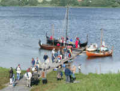
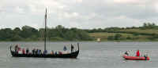
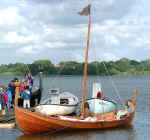
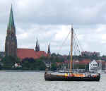
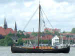
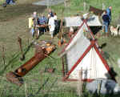
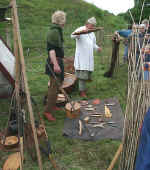
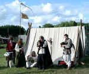
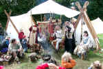
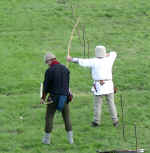
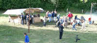
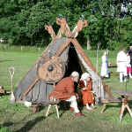
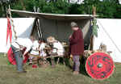
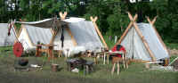
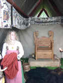
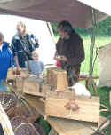
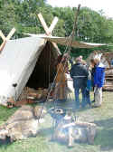
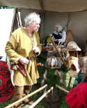
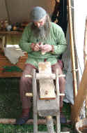
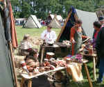
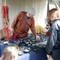
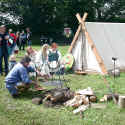
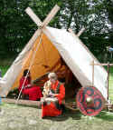
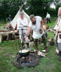
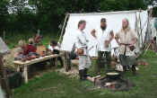
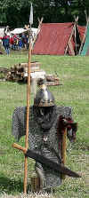
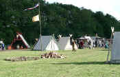
"Die Rückkehr der Wikinger" beim Museum Danevirkegården
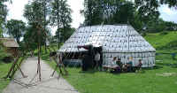
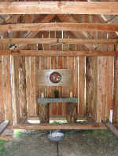
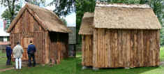
Alle Fotos wurden von mir am Samstag, 03.07.2004, aufgenommen


Nach § 22 (1) KunstUrhG dürfen Fotografien von Personen grundsätzlich nur mit Einwilligung der Abgebildeten verbreitet oder öffentlich zur Schau gestellt werden.
Ich unterstelle, dass die hier gezeigten Personen keine Einwände gegen diese Veröffentlichung haben. Falls sich dennoch jemand auf meinen Fotos wiedererkennt und mit der Veröffentlichung wider Erwarten nicht einverstanden sein sollte, so genügt natürlich eine kurze Mitteilung an mich und ich werde die entsprechenden Bilder unverzüglich entfernen.